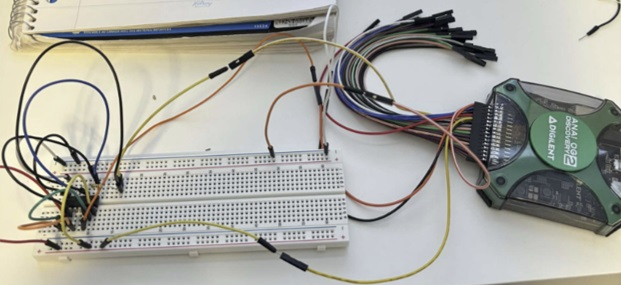

Voltage Controlled Switches
Project Overview
Introduction:
- Title: Voltage Controlled Switches
- Duration: February 2024 - March 2024
- Role: Project Engineer
- Technologies Used: MOSFETs, LT Spice, Waveforms Software, Analog Discovery 2
Summary:
This project explored the design, simulation, and testing of two types of electronic switches using a combination of p-type and n-type MOSFETs. The primary goal was to understand the behaviors of ideal switches versus non-ideal switches under various conditions and to optimize the design for bidirectionality, low resistance when on, and high resistance when off.
Design Implementation and Testing (Switch 1):
- Circuit Features: Utilizes three voltage sources, two n-type and a p-type MOSFETs, and a 10k ohm resistor.
- Behavior Analysis: Focus on verifying bidirectionality and the switch's ability to handle different voltages, with maximum voltage tests conducted up to 10V using the AD2.
- Results: Demonstrated that the switch operates with zero resistance when on and a very high resistance when off, confirming the expected ideal switch behaviors.
Design Implementation and Testing (Switch 2):
- Circuit Features: Similar setup to Switch Type 1 but with modifications to allow for output diversion to a secondary output when the switch is off.
- Behavior Analysis: Tested for the same parameters as Switch Type 1, with additional focus on the switch's response to control voltages and its impact on secondary outputs.
- Results: Confirmed that control actions lead to expected high or low outputs, validating the circuit's design and functionality under specified conditions.
Project Achievements
- Bidirectional Switch Design: Successfully designed switches that operate bidirectionally, allowing current to flow in both directions with minimal resistance when on.
- High and Low Resistance States: Demonstrated high resistance when off and zero resistance when on, confirming the switches' ideal behavior.
- Control Voltage Responsiveness: Validated that the switches respond accurately to control voltages, achieving expected high and low outputs reliably.
- Real-World Validation: Confirmed simulation results with practical tests, showing that the switches perform as designed under real-world conditions.
Gallery/Visuals
Switch 1 Schematic:
Switch 1 Real-Life Circuit:
Switch 2 Schematic:
Switch 2 Real-Life Circuit:
Voltage and Current Measurements for Both Switches
Challenges and Solutions
- Challenge: Ensuring the switch designs provided both bidirectionality and the ability to handle specified voltage ranges effectively.
- Solution: Iterative design adjustments using simulations in LTspice, followed by rigorous testing with Waveforms software and AD2 to ensure real-world operation aligned with theoretical expectations.
Future Directions
- Higher Voltage Testing: Plan to test the switches with voltages exceeding the 10V limit of the AD2, using more robust testing equipment.
- Design Optimization: Continuous improvement of switch designs to reduce non-idealities and enhance performance across various applications.